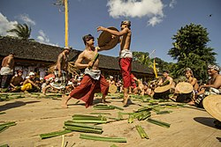
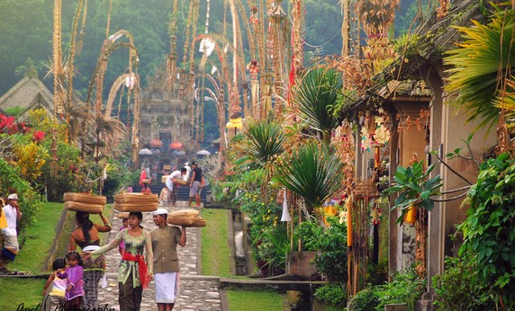

Mageret Pandan atau bisa disebut dengan Perang pandan adalah salah satu tradisi yang ada di Desa Tenganan, Kecamatan Karangasem, Bali. Perang pandan juga disebut dengan istilah makere-kere. Upacara perang pandan menjadi daya tarik bagi wisatawan, baik wisatawan dalam negeri maupun wisatawan asing.

Masyarakat Desa Tenganan memiliki kepercayaan yang berbeda dari umumnya masyarakat Bali.
Masyarakat di Desa Tenganan menganut agama Hindu Indra. Pemeluk agama Hindu Indra tidak membedakan umatnya dalam kasta.
Mereka juga menempatkan Dewa Indra sebagai Dewa tertinggi. Masyarakat Tenganan percaya bahwa desa yang mereka tempati merupakan hadian dari Dewa Indra.
Jaman dahulu daerah Tenganan di pimpin oleh seorang raja yang kejam bernama Maya Denawa.
Maya Denawa menganggap dirinya sebagai seorang Dewa. Selain menganggap dirinya Dewa, Maya Denata juga melarang masyarakat Tenganan untuk melakukan ritual keagamaan.
Pengakuan Maya Denata sebagai dewa membuat murka para Dewa, kemudian Dewa Indra diutus untuk melawan Maya Denata.
Peperangan antara Maya Denata dan Dewa Indra dimenangkan oleh Dewa Indra.
Peperangan antara Maya Denata dan Dewa Indra tersebut kini di peringati masyarakat Desa Tenganan dengan upacara perang pandan, karena Dewa Indra adalah dewa perang.

Upacara perang pandan dilaksanakan di Desa Tenganan.
Tenganan adalah salah satu desa tertua yang ada di pulau Bali.
Desa ini dikelilingi oleh bukit seperti benteng.
Ritual perang pandan dilakukan di depan balai pertemuan desa Tenganan.
Perang pandan ini dilakukan setiap bulan kelima atau sasih kalima dalam penanggalan desa adat Tenganan.
Ritual perang pandan berlangsung kurang lebih selama dua hari berturut-turut.
Upacara ritual ini dilakukan setiap satu tahun sekali.
Perang pandan dilaksanakan mulai dari jam 2 sore hingga selesai selama tiga jam.